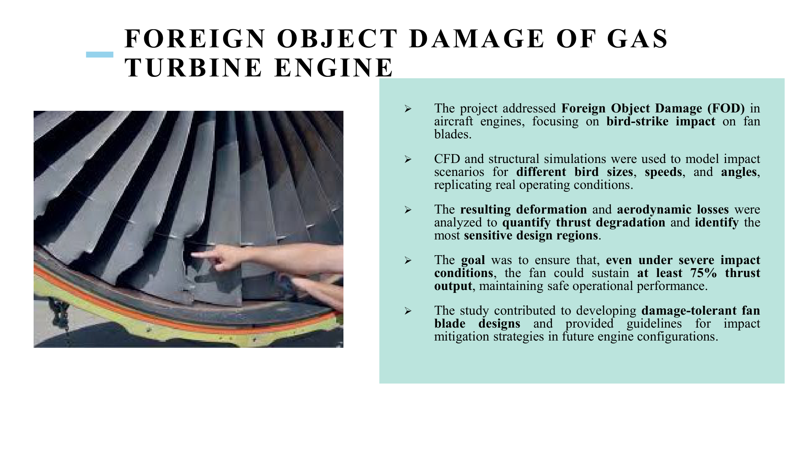

Case study · Transient CFD & structural · Honeywell
Transient FOD damage thresholds.
Transient Fluent + structural simulations of bird-strike impact on fan blades, quantifying deformation and thrust degradation across strike scenarios, to define repair-versus-replace envelopes.
Note: all Honeywell work is covered by an IP agreement. This page describes the physics, methodology, and skillset only — no proprietary geometry, certification data, or performance envelopes are shared.
Problem
Foreign-Object Damage (FOD), especially bird strike on fan blades at the front of a gas-turbine engine, is one of the defining safety and maintenance concerns for aero engines. After a strike event, operators need a defensible answer to one question: is this blade repairable, or does it need replacement? The team needed to translate a realistic range of strike conditions — varying bird mass, ingestion angle, rotational speed, and impact location — into deformation and aerodynamic-performance envelopes that inform repair-versus-replace criteria and certification-relevant thrust-degradation behaviour.
Approach
- Transient fluid simulation — ANSYS Fluent transient runs captured the aerodynamic response as deformed blade geometry swept through the flow field across a strike event window.
- Impact / structural response — explicit-dynamics modelling of the blade under impulsive loading; plastic deformation was mapped across parametric strike scenarios for different bird sizes, incoming velocities, and impact angles.
- Strike matrix — scenarios spanned small-to-medium-to-large bird mass, tip-to-root impact locations, and representative engine rotational speeds, producing a parametric map of deformation severity.
- Aerodynamic loss quantification — deformed blade geometries were re-analysed to predict thrust degradation and pressure-loss increase, giving engineers a direct link from impact severity to thrust envelope.
- Repair-envelope definition — results were used to construct a repair-versus-replace decision rule rooted in a minimum-acceptable-thrust criterion (objective: blades retain at least ~75% thrust capability after tolerable impact).

Tools & setup
- ANSYS Fluent (transient) — time-resolved compressible flow through deformed blade passages.
- ANSYS Mechanical / explicit dynamics — blade response to impulsive loading; plastic deformation and stress states.
- Python — parametric run orchestration; extraction of thrust degradation, deformation magnitude, and stress metrics across the strike matrix.
Outcomes
- Repair-versus-replace envelope — a thrust-degradation map over the strike parameter space that informs maintenance decisions directly.
- Identification of sensitive design regions — particular blade zones disproportionately responsible for thrust loss were flagged for future damage-tolerant design treatments.
- Guidance for mitigation — the study fed forward into design guidance for damage tolerance in future engine configurations.
Validation
Impact and deformation trends were compared against existing Honeywell impact-test campaigns and accepted industry bird-strike correlations. Aerodynamic thrust loss on deformed geometries was cross-checked against steady-state baseline CFD where equivalent deformation modes had been studied in isolation. The combined transient + structural pipeline was kept deliberately conservative on the aero side to protect the certification margin.
Lessons learned
- Transient CFD + explicit structural runs are expensive individually; the pipeline only earned its keep because the parametric matrix was carefully designed (not brute-forced) so every run answered a distinct design question.
- The useful output of a FOD study is not a single failure case — it is the repair envelope. That reframing changed how the team consumed the results.
- Deformation modes mattered more than absolute impact energy: two strikes delivering equivalent kinetic energy produced very different thrust losses depending on where on the span they landed.
Artifacts
- Technical briefs and maintenance-criteria documentation (Honeywell proprietary — available on request with NDA).